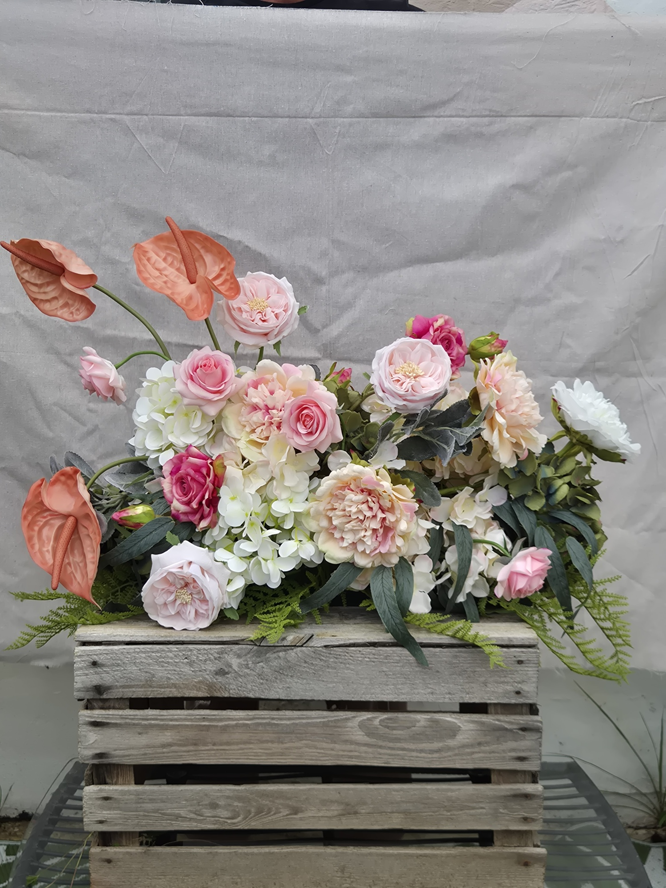
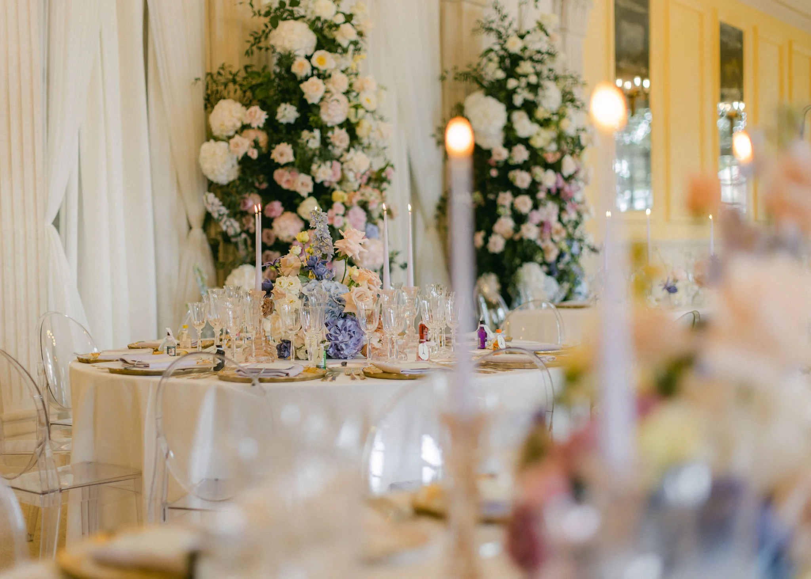

B2B & Commercial Spaces
Effortless elegance for boutique venues.
Commercial Floral Styling
Zero maintenance. Maximum impact.
Permanent botanical installations and seasonal floral rental rotations for hotels, spas, hair salons, restaurants, and private estates.

Botanical styling, made simple.
Fresh flowers in commercial venues require daily watering, constant stem trimming, and costly weekly replacements. Our hyper-realistic faux displays elevate your guest experience without ongoing maintenance or recurring fresh flower budgets.
- ✓Seasonal Rotations: Refresh your reception and dining spaces every quarter.
- ✓Bespoke Installs: Floral arches, hanging clouds, and urns scaled to your architecture.
- ✓Sussex & Surrey Coverage: Direct delivery and installation within 1 hour.
The Bonny Forever Difference
Beautiful, sustainable, built to last.
Always picture-perfect
Displays remain vibrant and polished from opening until close, without wilting or water maintenance.
Designed for your space
Every installation is tailored to complement your interior, architecture, and brand atmosphere.
A circular approach
Our rental model lets beautiful stems be enjoyed again and again rather than used once and discarded.
Let's work together
Make an EnquiryReady to transform your space?
Tell us about your venue, vision, and timing.